JANUARY
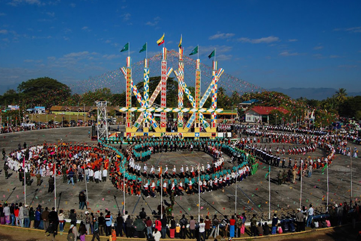
Witness these three huge celebrations in Kachin, Sagaing and Bagan; villagers performing the Manaw dance during Kachin Manaw Festival, locals celebrating the rare Naga New Year in Sagaing, and the Ananda Pagoda Festival in Bagan as villagers bring bullock carts to the festival.
APRIL
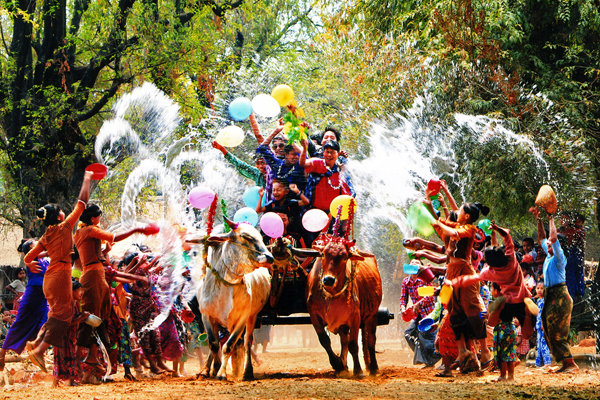
You have to visit Myanmar in April in order to participate in the country’s biggest festivals; the Water Festival and Myanmar New Year. For 3 days, people all over the country celebrate this water festival by splashing water on each other to cleanse one’s body and soul of evil and negativity. There is also Shwe Maw Daw Pagoda Festival and Salon Festival that should not be missed.
JULY
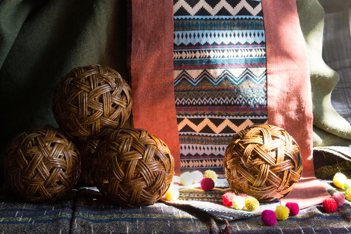
Waso Full Moon Festival is celebrated in July, where monks hold a retreat to teach sermons and meditate. Buddhists all over the country donate robes to the monks, making this festival highly respected by the Myanmarese. After that, the largest traditional sporting event in Myanmar is celebrated for 48 days, known as Waso Chin-Lone Festival or cane ball. If you happen to be in Myanmar in July, we recommend you to join the locals in watching the Waso Chin-Lone Festival in Mandalay. This non-contact sport showcases players’ acrobatic moves and skill in keeping the cane ball from touching the ground as they pass it to one another.
OCTOBER
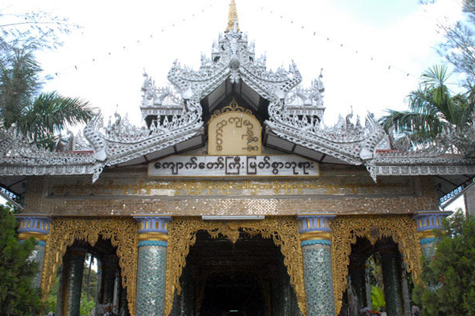
Thousands of people gather at Mandalay to pay respects to the beautiful marble Buddha image during the Kyauk Taw Gyi Pagoda Festival, held one day before the full moon month of Thadingyut. On 14th and 15th, witness the Elephant Dance Festival at Kyaukse where men dress in colourful elephant costumes and mimic elephant movements. During Thadingyut Light Festival, you will see thousands of lights lighting up the streets of Myanmar to celebrate the anniversary of Buddha. There is also the Shwe Kin Light Festival in Bago, where you can enjoy hundreds of lanterns and fireworks lighting up the night sky, and Kaunghmudaw Pagoda Festival where pilgrims pull ox-carts to sell local specialties in Sagaing .
FEBRUARY
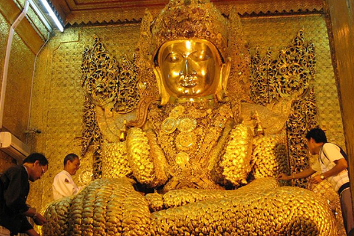
The Mahamuni Pagoda Festival is largely celebrated by the people of Mandalay during this month. Locals gather in front of the Maha Muni Buddha image to pray and pay their respects. In February, you will also witness Kogyikyaw Spirit Festival, Htamane Festival, Kyaik Khauk Pagoda Festival, and Mann Shwe Settaw Pagoda Festival.
MAY
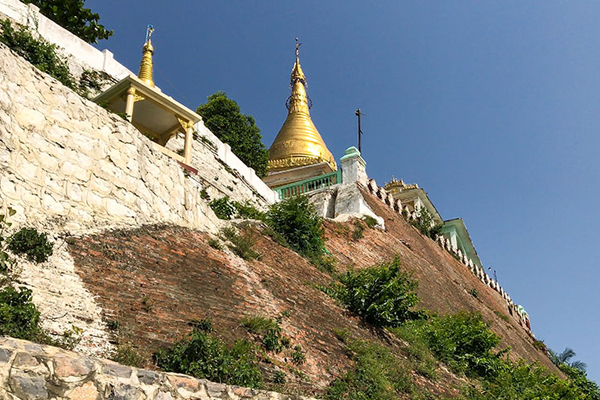
If you are visiting Myanmar in May, do witness the locals participating in the Bodhi Tree Watering Festival that celebrates the sacred Bodhi trees planted on religious sites throughout Myanmar. It is said that Lord Buddha gained enlightenment under a Bodhi tree, prompting devotees to plant these trees all over Myanmar by obtaining saplings from the original Bodhi tree.
AUGUST
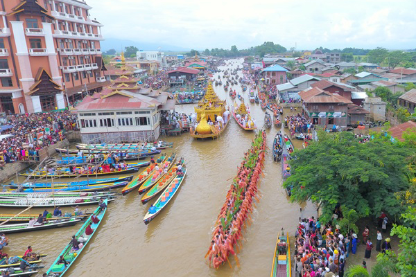
In August, the Myanmarese celebrate Yadana Gu Spirit Festival, an occasion for spirit-worshipping that involves mediums dancing and getting possessed by Nat, or spirits. In this festival, locals also celebrate the Goddess of Popa, or more commonly known as the protector of women. Taung Pyone Spirit Festival celebrates two souls of brothers who were believed to be executed at the village for failing to complete the Taung Pyone pagoda. People offer food to the spirits to keep them happy in exchange for protection and blessings.
NOVEMBER
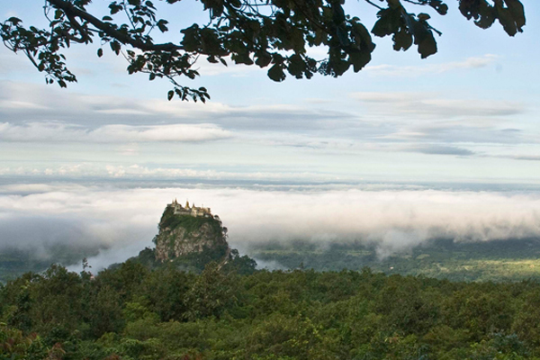
The Hot Air Balloon Festival in Taungyi is among the festival highlights in November. You will see beautiful balloons of all shapes and sizes floating in the sky day and night. During Tazaung Daing Light Festival, you will get to see many lights, candles and fireworks being lit by the locals. In November, you will also witness the All Night Robe Weaving Contest, Shwesandaw (Pyay) Pagoda Festival, Phowintaung Pagoda Festival, and Shwezigon Pagoda Festival.
MARCH
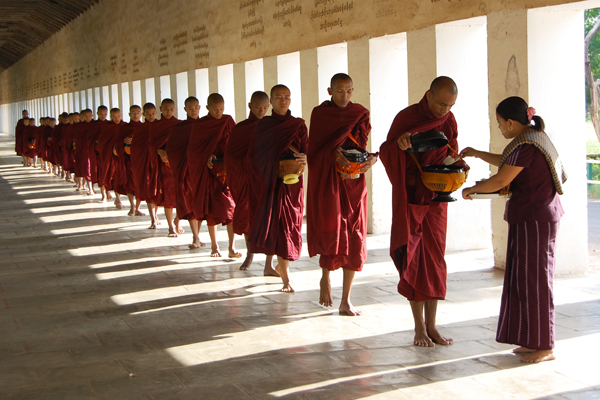
March is a busy month for Myanmar. Among the festivals are Panguni Uthiram Festival, Alaungdawkathapa Pagoda Festival, Shwedagon Pagoda Festival, Shwe Sar Yan Pagoda Festival, Kakku Pagoda Festival, Bawgyo Pagoa Festival, Inn Daw Gyi Shwe Myitzu Pagoda Festival, Maw Tin Zun Pagoda Festival, Shwenattaung Pagoda Festival and Novitiation Ceremony.
JUNE
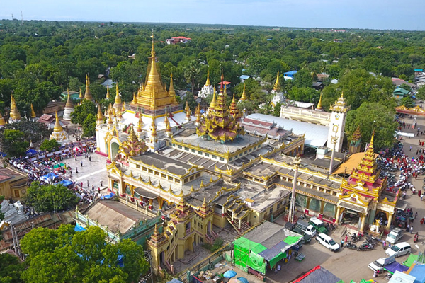
Locals celebrate Pakokku Thiho Shin Pagoda Festival at Magway by bringing in bull carts and selling all kinds of goods and produce. The money earned will be donated to the pagoda and monks at the temples. Some generous souls will even buy rice and nutritious food for the monks. You can purchase items from the vendors to experience the authentic local life as well.
SEPTEMBER
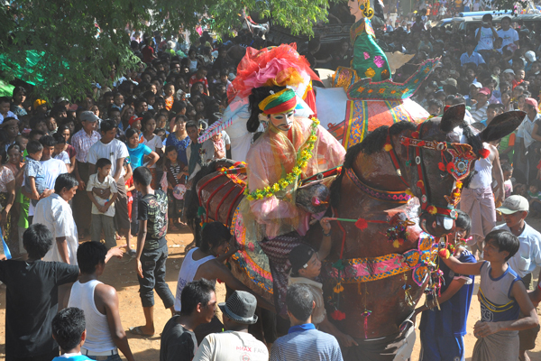
Inle Lake is usually crowded in September. Thousands of locals and visitors flock to Inle Lake to witness the highly anticipated Phaung Daw Oo Pagoda Festival that features enshrined Buddha images. Offer donations to the pagodas and watch locals sing and dance to folk songs, and watch the thrilling one-legged boat race participated by male locals. Manuha Pagoda Festival is also celebrated in September, with locals parading the streets with offerings and paper figurines of Lord Buddha’s reincarnations.
DECEMBER
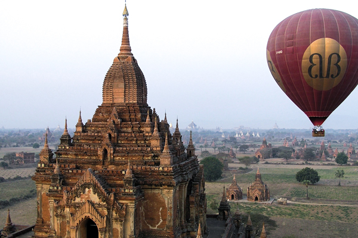
Magway Mya Thalon Pagoda Festival is celebrated by the people of Magway to welcome the New Year. 9,000 oil lamps are offered to the pagoda during this festival, which shows the pagoda brightly lit at night. The locals also donate food to the monks who have prayed and conducted religious rituals. Kyaikhtiyo Pagoda Festival celebrates the unique pagoda that is perched on top of a round granite boulder. Lastly, the Mae Lamu Pagoda Festival is one of the most famous temple festivals in Yangon. Monks in the country recite prayers for 24 hours during the day and dramas and music shows are also played during this festival to entertain the locals.